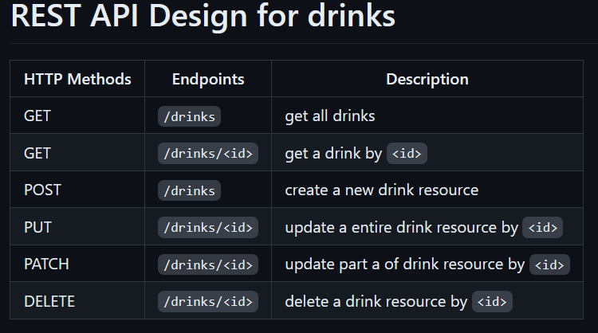

This command is used to initiate git on a project. It does this by creating a .git in a sub directory.
You can only run this command if there isn't already a .git file. And be sure you're int the root of the directory you want
to run this command on.
This command will stage all the changes in the entire repository where you're using it.
This will stage through the entire repository you're using in it, unlike ".", that just does it in the current directiory,
and all directories below it. Resulting in -A being more effecient if you have changes across multiple directories.
When using this command we commit all the changes we have staged, and adds it to our local history as a new commit.
This means we can track our changes. Also the -m stands for message which is the message we add to the commit.
We want to have a clear message, a friend of mine told me "The action that it does", for instance,
"adds eventlisteners to the homepage".
This pushes the changes to the main branch of the project that we have added to our git. "origin" is the name, that git has given the repository that we cloned from. "main" is the branch, and "push" is the command. This means we can also push to other remote branches like this. We did this alot in our "greenplate" project in 3rd semester.
This command creates and checks us into the new branch that we just created. We haven't used it alot this semester, but we did use it the entirety of last semester during projects. "checkout" checks us into a branch, or you can say switches branches. "-b" is how you create a new branch.
This commands lets us add a remote to our repository. If we have already created a repository on github, and wants to add a connection to it, we can use this command. Github also provides us with this command after creating a new repository.
This renames the current branch to main. We use this before pushing to our github repository so we push with main branch, the first time we push our project.
This pushing to our main to origin remote connection we made. We use -u to set up tracking so in the future we technically don't have to write git push origin main, because it will always push to main. But i personally find it good practice to do so, anwyays no matter where you are pushing to.
This fetches the changes from the origin remote connection we have and adds them to our local git. For example if we make any changes online, or if someone else does if multiple is working on it. We can't just push to main branch unless we pull the current changes beforehand.
Shows the log and status of our git. This can be useful if you make a mistake and get behind / ahead of head to see what is going on and what you should do to fix this.
There is a few more commands we use but they are all situational so not listing them here, as i don't see it as a part of the assignment, but these are the most useful ones i use on a regular basis.
Small explenations of some of the reasons to use git.
We use git for several reasons. Git make it easy to version things, as we can keep track of when, and what is going on. It also helps us to look at who is doing what. We can see who commits things and when it's done. This also helps when on bigger projects we use review as part of doing git commits, so before we merge anything, we have other people view our code, resulting in higher quality. We can also revert to previous commit if things break, or we can see when it actually broke.
We went over template literals with strings, and how we can use them for string interpolation.
We do this with `some text ${content}` to create a string with some text following by the string.
Example:
We also talked about how number and strings mixed can be a little wierd in js. We had an example of a string being a year for example "2023" and then adding an increment of 1 to it. To do this we can just parseInt(year) or use Number(year) to parse the string into the type we want it to have.
We had several examples of floats. First was using parseFloat to change a string to a float and adding the numbers.
We could do the same example as before with using Number instead. We can do this with using toFixed(2), which will result in 2 decimals.
We then worked with averages. We added several numbers and then took the average of them with decimals. We do this with simple math just adding them together and dividing with amount and using toFixed(5) for 5 decimals.
We then worked with getting the 3rd / last character by index. There is several ways to solve this problems including string[number], string.substring(2,3), string.slice(2,3), and what i prefer string.chatAr(string.length-1) as i find this and substring close to what i have done in other languages, and length-1 seems like a more natural way to find last character.
We talked about replace and how it replaces letters in a string. During this i made a regex, but found out by doing that, that regex is slow in JavaScript and is not to be recommended.
We talked about objects we also talked about how to use them. You can console.log(object.key) but we talked about if we need to use the value you get in the future it's better to reassign it.
We talked about creating a new key value pair. Adding isAllowed and set it to true.
We talked about removing properties from objects and the correct way of doing so. We do this with the keyword delete.
Under arrays we talked about getting array content by index. For instance getting a in the following scenario.
How to easily insert items into an array. We do this with splice, where we first chose the position and secondly chose for example 0 if we don't want to remove any elements from the array. This is because splice takes 2 arguments. This example will insert the 3 statements after cucumber and not remove anything.
How to add an element to the end, and how to remove the last element. push() and pop().
Copying an array to another array can be done with splice.
Looping through an array printing out every second letters for instance.
Looping through an array with if else statement. Simply by putting the if statement inside the loop. We talked shortly about just using for loops whenever you have something you can iterate through with a number
Javascript has type coercion. We can firstly use strict equality by using "===" or "!==" making sure we check for types aswell. If we use "==" or "!=" we do not check for types and type coercion would just make "1" == 1. Therefor we should always just make sure we have the correct types and use strict equality, otherwise we can get weird errors.
Another way to avoid this issue is typescript even though we have not talked about it. This makes sure you use the correct types as you have to declare types to everything, even going in and out of functions.
Other ways to handle this could be if we are unsure on what we are recieving and it could be a number we could use Number(content) to make sure that we always have a number no matter what we are recieving. If it would not be able to be a number, then it would just be a NaN and we could easily see what error it is.
Firstly for Node.js we installed it from https://nodejs.org. Some of us including me had worked with it before, so we already had it.
With Node.js comes commands like:
With this we can run javascript files. This helps to check if things are working for smaller things. Likes calculations testing certain scenarios etc.
We didn't use it for anything else during this week.
For REST we talk about about 3 conventions.
Here's an example that gives a good overview:
